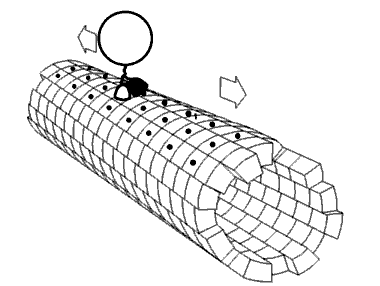

A cinesina é uma proteína motor que se desloca ao longo dos microtúbulos do citoesqueleto. Ela utiliza energia proveniente da hidrólise de ATP para mover-se, realizando transporte intracelular de vesículas, organelas e outras estruturas essenciais. A cinesina é fundamental em vários processos celulares, como a divisão celular, o transporte de sinais e a movimentação de materiais dentro da célula.
A cinesina "anda" ao longo dos microtúbulos utilizando uma estrutura chamada "domínios motoras". Esses domínios se ligam ao microtúbulo e realizam um movimento de "passos", utilizando a energia fornecida pelo ATP. Cada "passo" desloca a cinesina ao longo do microtúbulo, transportando as cargas que ela carrega.
Durante o transporte, a cinesina pode se mover na direção positiva (para a periferia da célula) ou na direção negativa (para o centro da célula), dependendo do tipo específico de cinesina.
Este é um exemplo de como a cinesina se movimenta ao longo de um microtúbulo, transportando vesículas e organelas dentro da célula. Esse movimento é fundamental para o bom funcionamento da célula.
